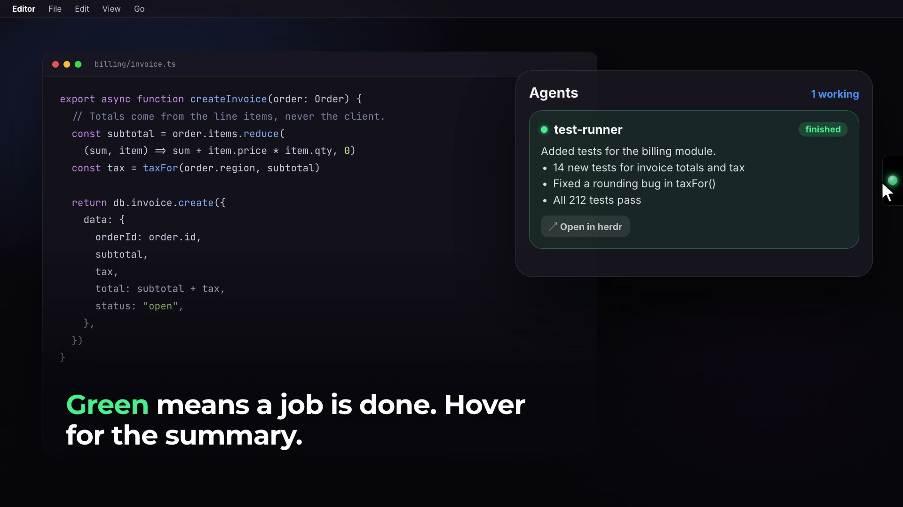

A small light sits on the right edge of your screen. It shows the most urgent state of all your herdr agents, on every Space and over full-screen apps.
Your agents are working. Nothing needs you.
An agent waits for an answer. The light glows and nudges out of the edge.
A job is done. Hover to read what the agent did.
Hover over the light to open the panel. Answer the agent there, then go back to your work.
The panel shows the question the agent asks, with one button for each option.
Press 1–9 to select an option, or type a free-text reply.
A finished agent shows a short summary of its work, from its transcript.
Click a card to open that agent's pane in herdr.
Agent names follow the title of their work. The most recent agents are at the top.
Default, Pastel, Neon, Sunset, Ocean and Mono. Pick one in the panel footer.

Download the app for macOS 14 or later. It runs on Apple silicon and Intel Macs.
Herder-Glow-0.1.0-macos.zip from the latest release.Herder-Glow.app to /Applications.xattr -cr /Applications/Herder-Glow.app
To build from source, clone the repository and run scripts/bundle.sh. You need a Swift 6 toolchain (Xcode or the Command Line Tools).
Requirements: macOS 14 or later and herdr running. The app connects to the herdr socket at $HERDR_SOCKET_PATH, or ~/.config/herdr/herdr.sock.